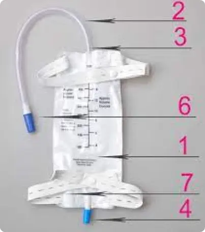
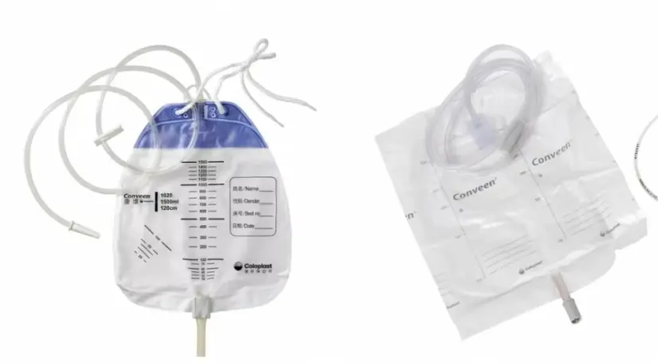

15 февраля
Уход за стомой. Часть 1. Подготовка. Как правильно снять калоприемник.
Данная памятка составлена, чтобы дать Bам необходимые знания и уверенность по уходу за стомой в домашних условиях. Для дости-жения наилучшего результата важно правильно закрепить стомийный мешок (мешок для сбора каловых масс/мочи) и ухаживать за кожей вокруг стомы.
Что такое стома?
Данная памятка составлена, чтобы дать Bам необходимые знания и уверенность по уходу за стомой в домашних условиях. Для дости-жения наилучшего результата важно правильно закрепить стомийный мешок (мешок для сбора каловых масс/мочи) и ухаживать за кожей вокруг стомы.
Данная памятка составлена, чтобы дать Bам необходимые знания и уверенность по уходу за стомой в домашних условиях. Для дости-жения наилучшего результата важно правильно закрепить стомийный мешок (мешок для сбора каловых масс/мочи) и ухаживать за кожей вокруг стомы.
Стомы делятся на постоянные или временные. Временную стому закрывают по прошествии нескольких месяцев
и человек
снова
может вести привычный для него образ жизни.
После операции каловые массы выводятся из пищеварительной системы нe через задний проход, а через стому.
Обычно стома красного или темнорозового цвета, напоминающего цвет слизистой оболочки рта. Форма стомы круглая
или овальная, безболезнена на ощупь, тёплая и влажная.
Замена стомийного мешка
- Запаситесь временем
- Приготовьте все необходимое
- Удалите стомийную пластину по направлению сверху-вниз, другой рукой придерживая кожу живота. При использовании открытого мешка не выбрасывайте зажим, им можно закрыть новый мешок.
-
Удалите стомийную пластину по направлению сверху-вниз, другой рукой придерживая кожу живота.
При использовании
открытого
мешка не выбрасывайте зажим, им можно закрыть новый мешок.
- Приложите шаблон на заднюю поверхность пластины и обведите карандашом контур отверстия
- Затем ножницами с закруглёнными концами вырежьте необходимое отверстие в пластине, важно чтобы обрезанный край был гладким. Край отверствия необходимо прогладить пальцами.
- Если поверхность кожи вокруг стомы неровная или имеются кожные складки, заполните их уплотняющей пастой.
- Положите пасту вокруг стомы и сравняйте её влажным пальцем так, чтобы на коже под пластиной она легла тонким слоем (если пальцы не намочить, паста будет приклеиваться!)
Так как содержимое кишечника и моча выделяются непроизвольно, мешок необходимо носить постоянно и заботиться о своевременном его опустошении. Хорошо закреплённый мешок можно использовать до 5–7 дней.
Итоги
Так как содержимое кишечника и моча выделяются непроизвольно, мешок необходимо носить постоянно и заботиться о своевременном его опустошении. Хорошо закреплённый мешок можно использовать до 5–7 дней.
Так как содержимое кишечника и моча выделяются непроизвольно, мешок необходимо носить постоянно и заботиться о своевременном его опустошении. Хорошо закреплённый мешок можно использовать до 5–7 дней.
Покупая средства по уходу за стомой вы оплачиваете 10% от их стоимости, 90% доплачивает Больничная касса.
Так как содержимое кишечника и моча выделяются непроизвольно, мешок необходимо носить постоянно и заботиться о своевременном его опустошении. Хорошо закреплённый мешок можно использовать до 5–7 дней.
Мешок необходимо носить постоянно и заботиться о своевременном его опустошении.
Так как содержимое кишечника и моча выделяются непроизвольно, мешок необходимо носить постоянно и заботиться о своевременном его опустошении. Хорошо закреплённый мешок можно использовать до 5–7 дней.
Не используйте для уходом за кожей вокруг стомы эфиро — или спиртосодержащие растворы!
Так как содержимое кишечника и моча выделяются непроизвольно, мешок необходимо носить постоянно и заботиться о своевременном его опустошении. Хорошо закреплённый мешок можно использовать до 5–7 дней.